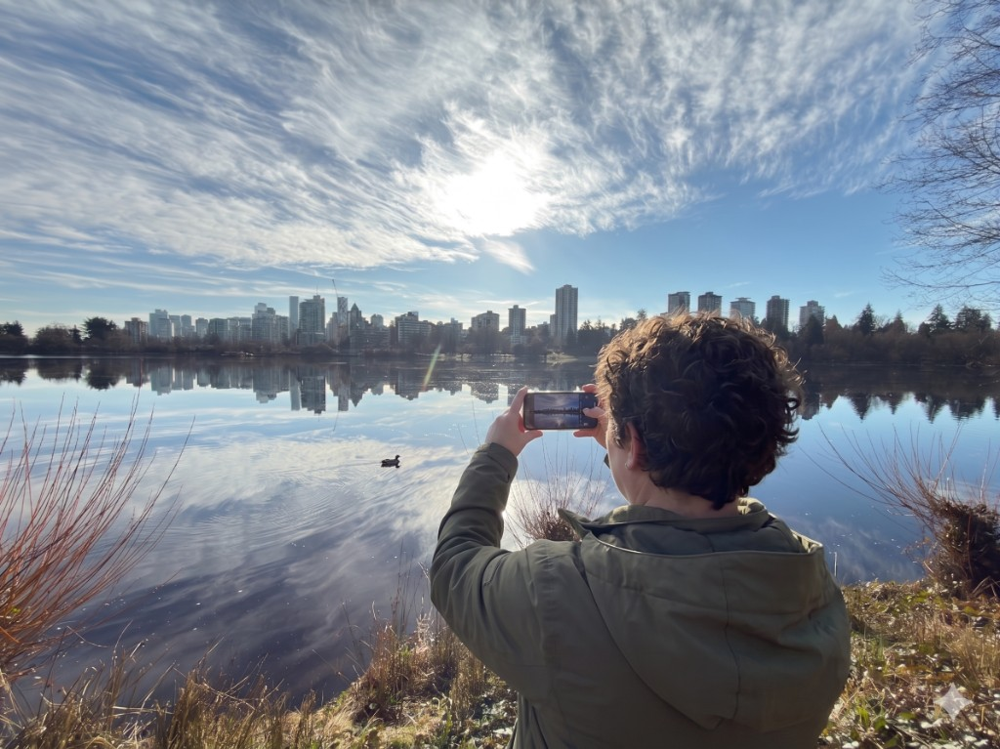

Work that stays
Punkeye Pictures helps people with developmental disabilities make films and videos—using phones and simple tools, in collaboration with caregivers and day programs. Projects run over weeks and months, not as one-off activities. Here, you can take real pride in what you make.
Trial roster fullWe've applied for grant funding. If the grant is awarded, this trial goes ahead with the partner organizations we've already brought on board—for them, at no cost for this phase.
Interest came in faster than we expected, and the Punkeye ethos seems to be resonating. We're not adding partner organizations to this trial.
If you'd like to know how Punkeye Pictures might benefit your organization, let's talk.
Art for the timeline, not the landfill
In many programs, daily craft projects are disposable. At Punkeye, we treat every creative choice—a photo, a sketch, or a short video clip—as a permanent building block. We use professional systems to ensure daily efforts build into substantial films that last. Nothing is thrown away. Participants can see their work-in-progress at any time, no matter how long they work on it.

A way in
The filmmaking world has long been guarded by gates that are difficult for many to open. Punkeye Pictures is designed to be a way in.
Different paths
Not everyone follows the same road. For some, this becomes a lifelong creative practice. For others, it's the professional foundation they've been denied—a place to hone skills, build a portfolio, grow into themselves as authors and filmmakers. We don't run people through training pipelines. We give them structure and time, and let talent emerge at its own pace.
Everyone belongs
The work is built from small pieces—one frame, one choice, one clip. No one excluded by the format. One frame at a time.
Why Punkeye Pictures exists
I've seen too many people with disabilities end up in programs that fill time instead of building it. Same thing every day. No sense of moving forward.
We're building something different: structured creative work. People contribute to media projects over weeks and months. Creative value isn't who holds the camera—it's who makes the decisions. Projects unfold over time instead of looping back to one-off activities. Everyone has a story worth telling; our job is to make it possible to tell it, using tools that work for each person.
Own Voices
Own Voices—people with disabilities creating and shaping disability stories—is central to our approach. Read more about Own Voices
Work samples
We will post work samples as the trial gets underway. Participant-created films, storyboards, and frames will appear here once we have consent and the first projects are complete. See What we do for more.